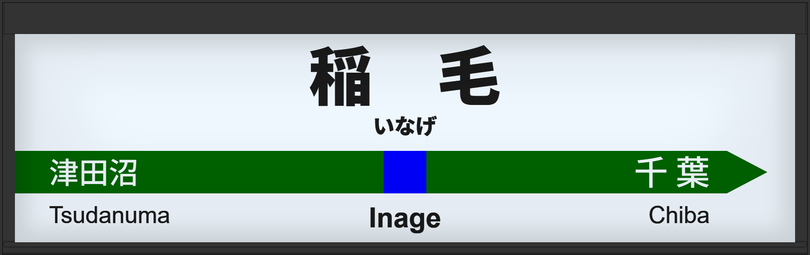

| ←津田沼 | ■ 横須賀線 | 千葉→ |
|---|
2000年5月に旧型ATOS放送を導入。
2013年3月に常磐改良型に更新。
| 3 |
■ 総武快速線 久里浜方面 |
3番線次発予告 3番線接近放送 3番線到着放送 |
放送は「快速 東京行」です。 旧型でした。 |
|---|---|---|---|
| 4 |
■ 総武快速線 東京方面 |
4番線次発予告 4番線接近放送 3番線到着放送 |
放送は「快速 君津行」です。 旧型でした。 |